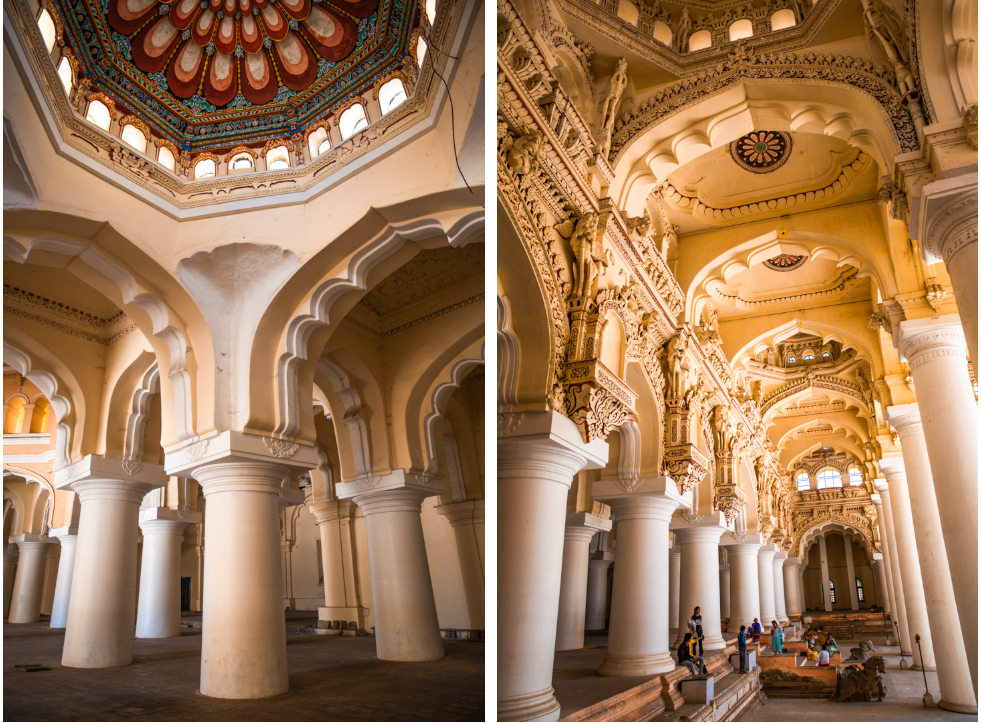

Thirumalai Nayakkar Mahal is a grand palace located in Madurai, built in the 17th century by King Thirumalai Nayak of the Nayaka dynasty. It is known for its majestic Dravidian Islamic fusion architecture, featuring massive pillars and beautifully designed arches. The palace once served as the royal residence and administrative center of the Nayak rulers. Although only a portion of the original structure remains today, it still showcases the artistic brilliance and engineering skills of that era. The palace is now a popular tourist attraction and hosts a daily sound-and-light show that narrates the history of Madurai.
